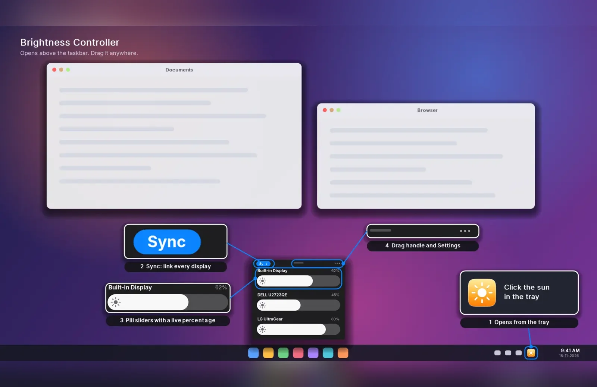
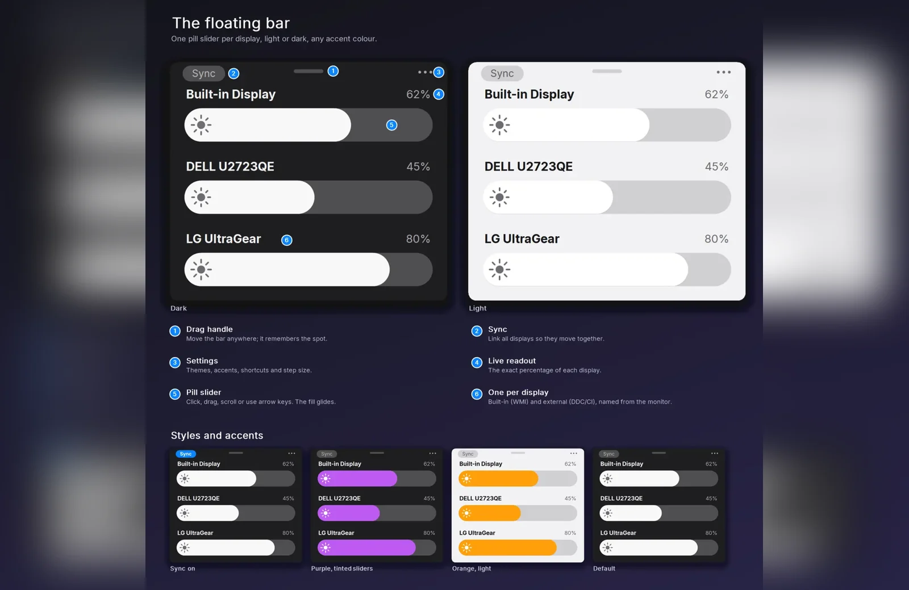
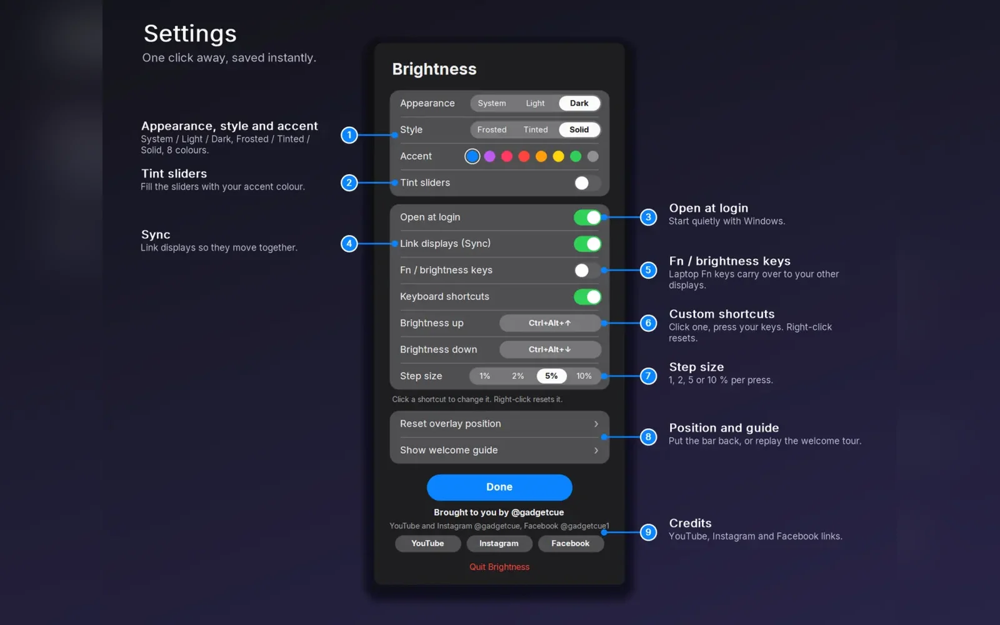
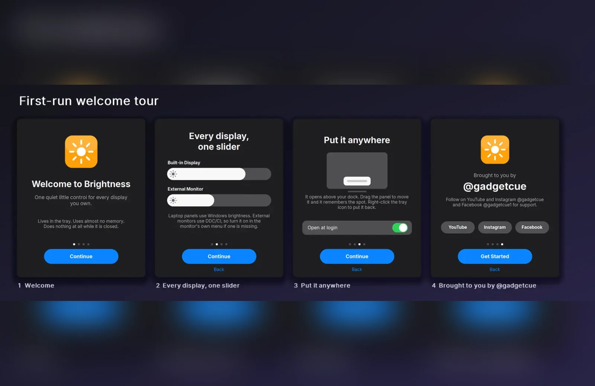

NewSee what's new in Brightness Controller›
A tiny tray app that sets the brightness of your laptop screen and external monitors from one Apple-style panel.
Windows 10 and 11 · About 2.4 MB

A slider for each screen. Laptop screens and external monitors.

Drag it anywhere. Light or dark, any accent colour.

Shortcuts, step size, light or dark. Eight accent colours.

A quick tour on first run. Four short steps.